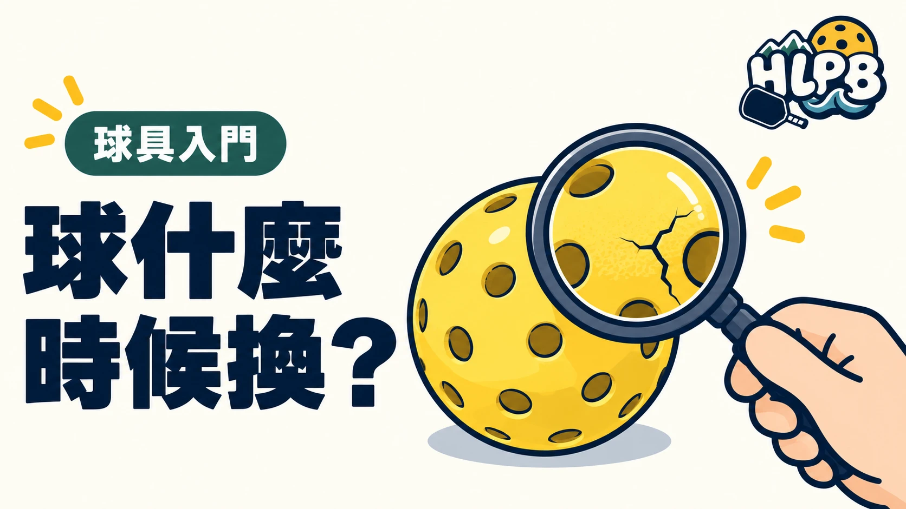

球看起來還完整，就一定能繼續打嗎？先看狀況，比只計算用了多久更有意義。
不同球款、使用頻率與環境，可能影響使用情形，因此不宜把「打幾場就換」寫成所有球都適用的標準。
| 檢查項目 | 處理方式 |
|---|---|
| 明顯裂痕 | 先停止使用，換另一顆完整的球 |
| 凹陷或變形 | 換球確認，不勉強拿來繼續對打 |
| 表面磨損 | 不能只憑刮痕判定，需一起檢查完整性 |
| 彈跳異常 | 在相同位置比較，先排除地面差異 |
| 比賽用球 | 依主辦單位指定球款與換球程序 |
製造商也將球體裂痕列為需要處理的產品問題，例如 Selkirk 的 Pro S1 保固針對明顯裂痕提供保障。各品牌的保固條件不同，不能套用到所有球款。
球有裂痕，就先換球。不要把異常彈跳全部當成自己的技術問題。
練習前花一點時間查看球體，打球中如果突然覺得彈跳不對，也可以停下來檢查。正式比賽則依裁判或主辦安排處理，不自行認定換球後要重打。
沒有明顯問題的球，不必因為使用過就直接丟棄。需要更換時，也不用等到球完全裂開才處理。
檢查表為 HLPB 編輯整理，不是統一換球標準。
參考來源：Selkirk 官方說明
最後查證：2026-10-10｜HLPB 編輯整理，參考來源見內文
返回文章列表